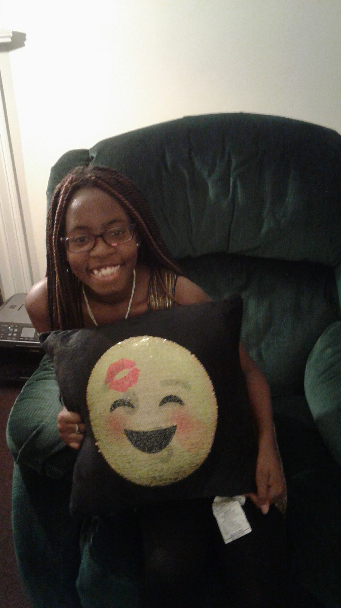

My name is Asanti and I am a junior in High School. Girls Who Code is my very
first exposure to coding. Although I struggle with it sometimes, when I figure it
out its the best feeling. This sneaker website was a great idea that we came up
with becauase it helps people with buying and selling their sneakers. Helping others
is the idea we want people to take away with what we have created.
Syrena

My name is Syrena and I'm a junior in High School. I was ever really into
coding unitl I started Girls Who Code. Like most people I struggle but when I
finally debug something after working on it for what feels like foerver, is
the most amazing feeling. LegUp is something that combines all three our loves,
Sneaker.